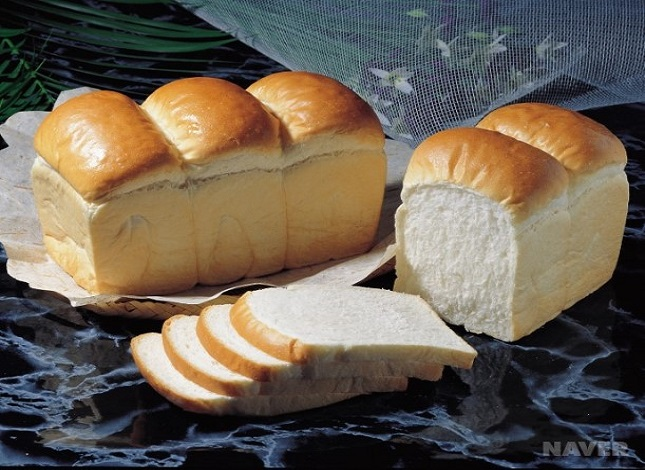

|  |
광의로는 식사 때에 내놓는 빵. 식빵이라 규정하는 것은 나라마다 다르다. 우리나라에서 식빵이라 하는 것은 틀에 넣어 구운 흰 빵이다. 빵의 윗면은 자연스럽게 부풀려 만든 open top bread와 뚜껑을 덮어 평평하게 구운 pullman bread가 있다. 또 배합에 따라 설탕, 우유, 유지를 거의 첨가하지 않은 저배합(lean type) 식빵과 이들을 많이 첨가한 고배합(rich type) 식빵이 있다. 대체적으로 전자는 토스트용이고 후자는 샌드위치용이다. 빵은 밀가루, 이스트, 물, 소금을 주원료로 하여 반죽하고 발효시킨 뒤 익힌 것이다. |